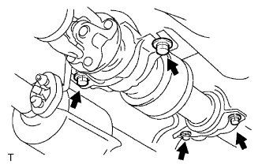
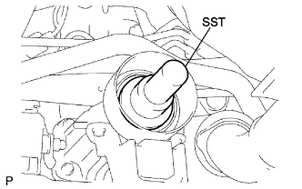
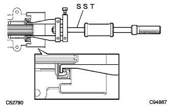

トランスファ エクステンション ハウジング オイルシール（4WD） 取り外し |
参照| 1. プロペラシャフト ウィズ センタベアリングASSY取りはずし |
 |
図の箇所に合わせマークをつけ、ボルト４本、ワッシャおよびナット各４個をはずし、プロペラシャフトASSY RRをディファレンシャルフランジから切り離す。
 |
|  |
ボルト４本をはずし、プロペラウィズセンタベアリングシャフトASSYを取りはずす。
|  |
プロペラウィズセンタベアリングシャフトASSYを取りはずした後、トランスファオイルの流出を防ぐため、エクステンションハウジングにSSTを挿入する。
| 2. トランスファ エクステンション ハウジング オイルシール取りはずし |
|  |
SSTを使用して、オイルシールをエクステンションハウジングから取りはずす。